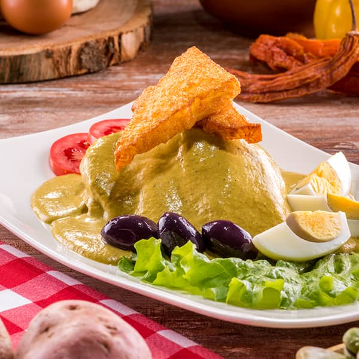

Ocopa

Ocopa is a traditional Peruvian dish from Arequipa
- 2 oz nuts, toasted
- 6 oz onion, chopped
- 2 garlic cloves
- 4 oz Mirasol chili pepper (or 3 tablespoons of Mirasol chili pepper paste)
- 2 tablespoons Ají Amarillo (or 2 tablespoons Ají Amarillo paste)